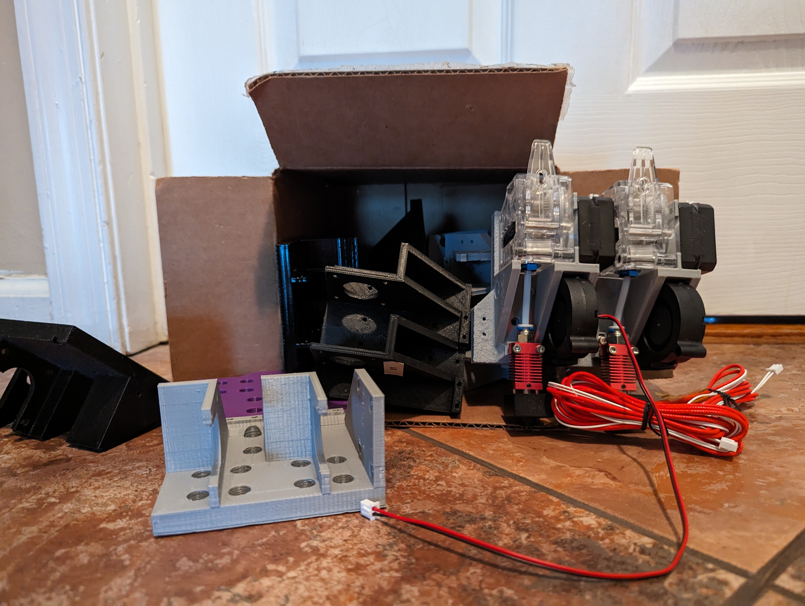

SDEXC
 SDEXC stands for Simple Dual Extruder X Carriage. As the name implies, it is a dual extruder X axis carriage designed for cartesian style printers like the Anet A8, Ender 3, and Prusa i3. It features two high torque pancake style NEMA 17 stepper motors, paired with twin BMG style geared extruders. This was done for weight and space saving. Despite using two short runs of PTFE tubing, it is technically a direct drive extruder, making it compatible with flexible filaments. It is first required that your existing X carriage is replaced with an X Carriage Mounting plate specific to your printer, which will be provided. The SDEXC can then mount to that using its standard mounting pattern.
SDEXC stands for Simple Dual Extruder X Carriage. As the name implies, it is a dual extruder X axis carriage designed for cartesian style printers like the Anet A8, Ender 3, and Prusa i3. It features two high torque pancake style NEMA 17 stepper motors, paired with twin BMG style geared extruders. This was done for weight and space saving. Despite using two short runs of PTFE tubing, it is technically a direct drive extruder, making it compatible with flexible filaments. It is first required that your existing X carriage is replaced with an X Carriage Mounting plate specific to your printer, which will be provided. The SDEXC can then mount to that using its standard mounting pattern.
It accepts ender or creality style hotends. I currently use two creality spider 3.0 hotends. You can even mismatch hotends to a degree thanks to an adjustable bracket. I will not be going into further details on how it works just yet, as I do not want someone else to beat me to the punch. I currently use my newest prototype in my printer as a daily driver, and I print newer prototypes with it. It is technically self replicating now! It works very well. It took over 10 iterations to get it to its current state.
